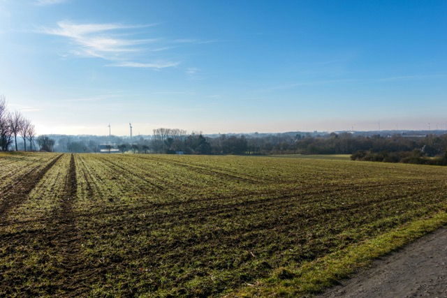

Koszty odrolnienia działki w Polsce w 2026 roku - aktualne stawki i zasady

Odrolnienie działki, czyli wyłączenie gruntu z produkcji rolnej, wiąże się z konkretnymi opłatami określonymi w przepisach prawa. Wbrew obiegowym opiniom nie są to wartości uznaniowe - obowiązują ustawowe stawki za 1 hektar gruntu, które stanowią podstawę do wyliczenia kosztów.
Poniżej przedstawiono aktualne stawki obowiązujące w Polsce (2026) oraz sposób ich zastosowania w praktyce.
Aktualne stawki odrolnienia (należność jednorazowa)
Wysokość opłaty za wyłączenie gruntu z produkcji rolnej zależy od klasy bonitacyjnej gleby i jest określona ustawowo.
Stawki za 1 ha (2026):
- klasa I - 437 175 zł
- klasa II - 378 885 zł
- klasa IIIa - 320 595 zł
- klasa IIIb - 262 305 zł
- klasa IVa - 204 015 zł
- klasa IVb - 145 725 zł
- klasa V - 116 580 zł
- klasa VI - 87 435 zł
Są to dokładne wartości ustawowe, które stanowią podstawę do dalszych obliczeń.
Jak liczy się rzeczywisty koszt
Koszt odrolnienia nie jest równy powyższym stawkom - są one tylko punktem wyjścia.
Wzór: (stawka za ha × powierzchnia) - wartość rynkowa gruntu
Dodatkowo obowiązują zwolnienia ustawowe.
Przykład (realne wyliczenie)
Działka:
- powierzchnia: 1000 m² (0,1 ha)
- klasa: IIIa
- wartość gruntu: 10 000 zł
Krok 1 - należność bazowa: 0,1 × 320 595 zł = 32 059,50 zł
Krok 2 - pomniejszenie: 32 059,50 zł - 10 000 zł = 22 059,50 zł
Wynik: opłata jednorazowa w tym przypadku wynosi 22 059,50 zł.
Opłaty roczne (obowiązkowe)
Oprócz opłaty jednorazowej występuje dodatkowe obciążenie:
- 10% należności rocznie
- przez 10 lat
W powyższym przykładzie: 3 205,95 zł rocznie × 10 lat = 32 059,50 zł.
Zwolnienia ustawowe (kluczowe w praktyce)
W wielu przypadkach inwestor nie ponosi opłat lub są one znacząco niższe.
Najważniejsze zwolnienie: do 500 m² pod budowę domu jednorodzinnego - brak opłat.
Oznacza to, że opłaty naliczane są tylko dla powierzchni przekraczającej ten limit.
Kiedy koszt wynosi 0 zł
Zgodnie z przepisami i praktyką koszt może wynieść 0 zł:
- gdy inwestycja mieści się w limicie 500 m²
- gdy wartość rynkowa gruntu jest równa lub wyższa od należności
- w wielu przypadkach dla gruntów słabszych (np. klasy V-VI)
W takiej sytuacji inwestor formalnie przechodzi procedurę, ale nie ponosi opłaty.
Źródła
Ustawa z dnia 3 lutego 1995 r. o ochronie gruntów rolnych i leśnych (ISAP)